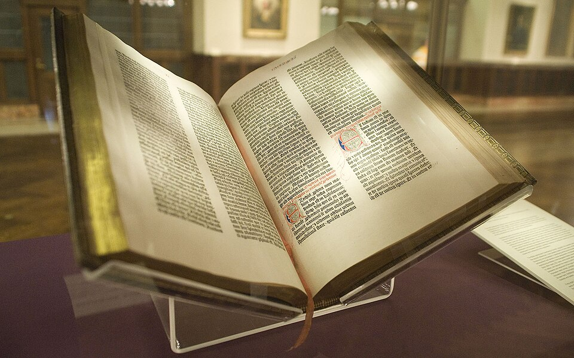
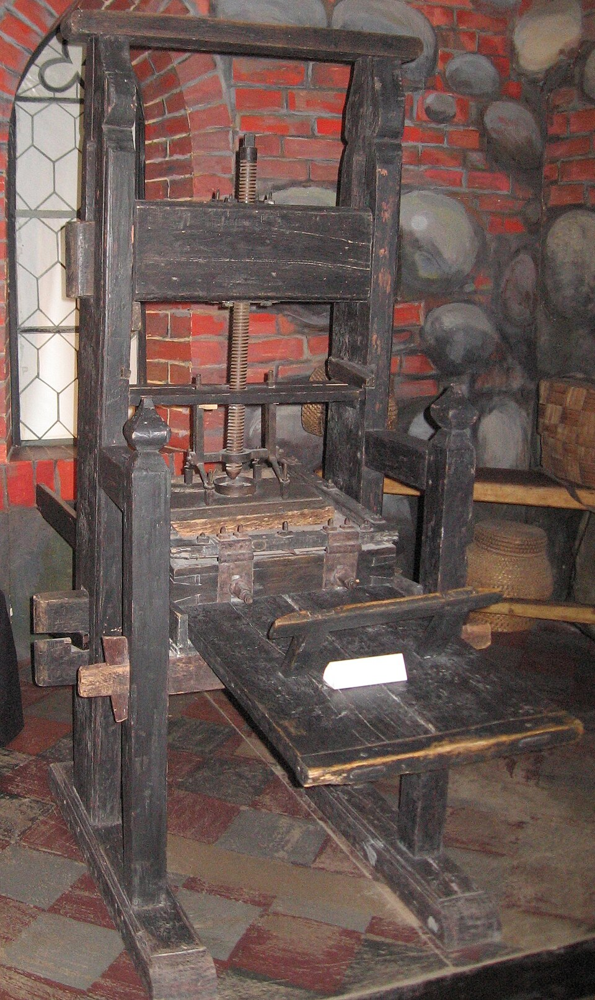
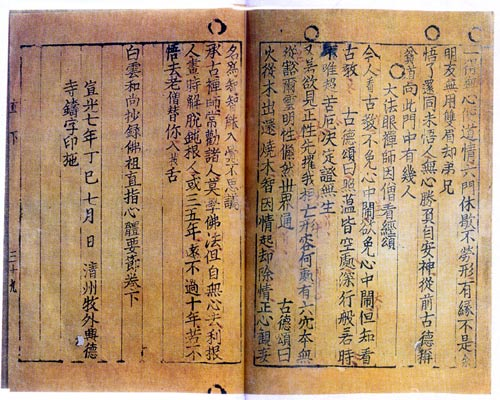

⏱️ 10초 카드 · 인쇄 혁명 (1400?~1468)
42행 성서활판 인쇄 시스템지식의 폭발
여는 질문 — 기계 한 대가 정말로 세상을 바꿀 수 있을까?
이름
한국어구텐베르크
원어Johannes Gutenberg
실제 발음요하네스 구텐베르크
로마자Johannes Gutenberg
영어권Johannes Gutenberg
왜 이 사람인가
이 도감에서 구텐베르크는 '한 가지 기술이 세상을 바꾼' 가장 분명한 사례예요. 그가 책의 가격을 폭락시키자, 지식이 소수 성직자의 손을 떠나 보통 사람에게 퍼졌죠 — 루터의 종교개혁도, 과학혁명도 그 위에서 일어났어요. 다만 그 발명의 열매는 정작 그가 누리지 못했고, 금속활자 자체는 고려가 78년 앞섰다는 것(직지!)도 함께 기억해야 균형이 맞아요.
생애
마인츠의 금속 세공사 집안에서 태어나 금화 주조·보석 가공 기술을 익혔어요. 그 금속 기술이 운명을 바꿉니다 — 글자 하나하나를 균일한 금속 활자로 대량 주조하는 법을 찾아낸 거죠.
활자 주조기, 유성 잉크, 포도주 압착기를 개조한 인쇄기 — 개별 기술들을 하나의 '대량 생산 시스템'으로 묶은 것이 그의 진짜 발명이에요. 1450년대의 42행 성서는 그 시스템의 첫 걸작이고요.
그러나 동업자 푸스트와의 소송에서 패해 인쇄소와 성서 재고를 통째로 넘겨야 했고, 만년은 대주교의 연금으로 버텼어요. 세상을 바꾼 발명가가 그 열매를 누리지 못한 채 — 그의 기계만 50년 만에 유럽을 책으로 덮었죠. (금속활자 자체는 고려가 78년 앞섰다는 것 — 직지! — 도 함께 기억해요.)
자료로 보기 — 유묵·사진



남긴 말
“이것은 샘이다. 여기서 흘러나온 진리가 온 세상을 적시리라.”
인쇄기를 두고 구텐베르크가 했다고 전해지는 말 — 기록으로 확인되진 않은, 후대의 표현이에요. · 출처: 후대에 전해지는 말(전언)
“구텐베르크 이후의 세계는, 좋든 나쁘든 그의 발명에 빚지고 있다.”
훗날 작가 마크 트웨인이 인쇄술의 영향을 두고 한 평가 — 그 자신의 말이 아니라 후대의 평이에요. · 출처: 마크 트웨인의 구텐베르크 평(요지)
연표
- 1400?마인츠에서 출생
- 1450년경인쇄 시스템 완성
- 1455년경42행 성서 인쇄
- 1455푸스트 소송 패소 — 인쇄소 상실
- 1468사망
생애의 길 — 라인강 변, 그러나 세계를 바꾼 🗺️
마인츠에서 슈트라스부르로, 다시 마인츠로. 좁은 반경 안에서 세상을 바꿀 기계가 태어났어요.
현재 지도 위 표시예요. 라인강 변의 좁은 반경 안에서 평생을 보냈지만, 그가 만든 기계는 단 50년 만에 유럽 전체를 책으로 덮었어요.
빛과 그림자지식의 가격을 폭락시켜 종교개혁·과학혁명의 무대를 깔았지만, 본인은 소송과 가난 속에 저물었어요 — 혁신과 보상이 따로 노는 문제의 첫 기록 중 하나예요.
더 깊이 (고등·일반)
금속 세공사의 발명
구텐베르크는 마인츠의 금속 세공사 집안에서 태어나 금화 주조·보석 가공 기술을 익혔어요. 바로 그 금속 기술이 운명을 바꿨죠 — 글자 하나하나를 똑같은 모양으로 빠르게 찍어 낼 수 있는 '금속 활자'를 대량으로 주조하는 법을 찾아낸 거예요. 손으로 베껴 쓰던 책을 기계로 찍는 시대의 문이 열렸죠.
참고: 구텐베르크의 활자 주조 일반
진짜 발명은 '시스템'이었다
사실 활자, 잉크, 인쇄기 같은 요소는 따로따로 존재했어요. 구텐베르크의 천재성은 이것들을 하나의 '대량 생산 시스템'으로 묶은 데 있었죠 — 균일한 금속 활자, 금속에 잘 묻는 유성 잉크, 포도주 압착기를 개조한 인쇄기. 부분이 아니라 '연결'이 발명이었던 거예요.
참고: 인쇄 시스템의 구성 일반
42행 성서 — 시스템의 첫 걸작
1450년대에 찍은 '42행 성서'는 그 시스템이 낳은 첫 걸작이에요. 손으로 쓴 필사본 못지않게 아름다우면서도, 여러 부를 똑같이 찍어낼 수 있었죠. 책 한 권을 만드는 데 몇 달씩 걸리던 세상이, 곧 책으로 뒤덮이게 되는 출발점이었어요.
참고: 구텐베르크 성서 일반
열매를 빼앗긴 발명가
그러나 구텐베르크는 동업자이자 투자자였던 푸스트와의 소송에서 져, 인쇄소와 성서 재고를 통째로 넘겨야 했어요. 세상을 바꾼 발명가가 정작 그 보상을 누리지 못하고, 만년엔 대주교의 연금으로 버텼죠. '혁신을 한 사람'과 '돈을 번 사람'이 따로인 문제 — 그 첫 기록 중 하나예요.
참고: 푸스트 소송 일반
직지와 함께 기억하기
'활자 인쇄' 자체를 가장 먼저 한 것은 유럽이 아니에요. 고려의 『직지심체요절』(1377)은 구텐베르크 성서보다 무려 78년 앞선, 현존 세계 최고(最古)의 금속활자 인쇄본이에요. 다만 구텐베르크의 '대량 생산 시스템'이 유럽을 빠르게 책으로 덮었다는 점에서, 둘은 '누가 먼저인가'와 '어떻게 퍼졌는가'를 함께 봐야 하는 이야기예요.
참고: 직지심체요절·금속활자 역사 일반
사람의 그물 — 함께 읽을 인물
이 인물이 나오는 이야기
더 공부하기 — 여기서 출발하세요
📚 책으로
- 구텐베르크 혁명 ↗ · 존 맨한 발명이 어떻게 세상을 바꿨는지 — 인쇄술의 이야기.
📜 1차 사료
- 구텐베르크 42행 성서 ↗인쇄 시스템이 낳은 첫 걸작 — 지금도 몇 부가 남아 있어요.
- 직지심체요절 (1377) ↗구텐베르크보다 78년 앞선, 현존 세계 최고(最古) 금속활자본.
🎬 영상으로
- 〈The Machine That Made Us〉 (스티븐 프라이, BBC) ↗🟢 배우 스티븐 프라이가 직접 구텐베르크 인쇄기를 복원하며 따라가는 BBC 다큐(영어).
📍 가 볼 곳
- 구텐베르크 박물관 (마인츠, 독일) ↗그의 인쇄기와 성서가 있는 곳.
- 청주 고인쇄박물관 (한국)『직지』의 고장에 세워진 인쇄 문화 박물관.